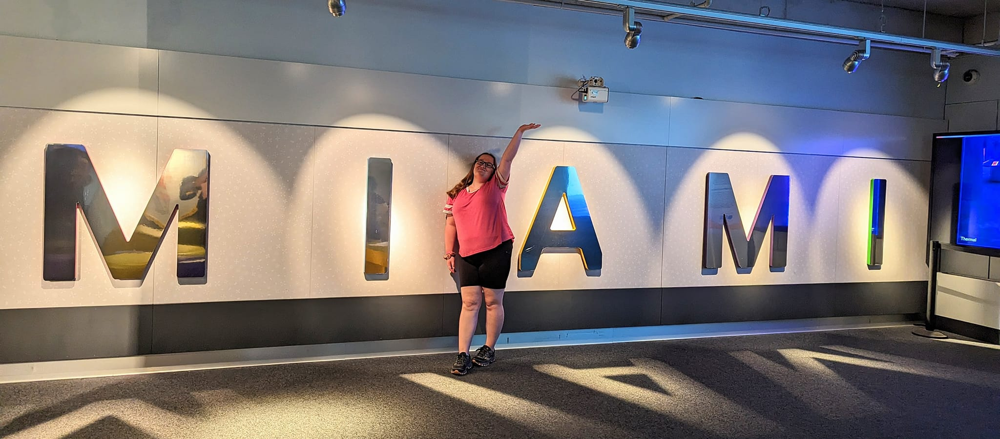

Stella Craig
Computer Science Junior
My name is Stella Craig. I am a Junior studying computer science at the
University of Missouri. I just got back from Miami, Florida, where my mom
and I vacationed. We spent the entire week we were there just relaxing on
the beach. One of the days we were there, it rained, so we went to the Frost
Science Museum, where I had my mom take the below picture of me. My mom and
I are very close. I am very lucky to be from Columbia, so I am able to save
a lot of money by staying at home with my mom and commuting to school everyday.
I currently work at the Telecom building for the IT Department at Mizzou as
a student worker and building coordinator. In my free time I like to read, play
video games, and annoy my friends. I recently saw both Oppenheimer and Barbie
and I must say that the Barbie movie was better. But that is definitely influenced
by my love for Margot Robbie. She is also in my favorite movie of all time:
The Suicide Squad (2021), not to be confused by the dumpsterfire of a movie that
was Suicide Squad (2016) of course. When I get my own place, I want to own two
dogs, one cat, and a bunny. Two dogs is necessary because dogs are more social
animals so they can play with one another, but cats tend to be the opposite so
I'll only get one. And I want a bunny because it's a bunny and why wouldn't I
want one. Anyway, I don't know what more to say about myself. Hope you enjoyed!

LinkedIn
GitHub
Puppies